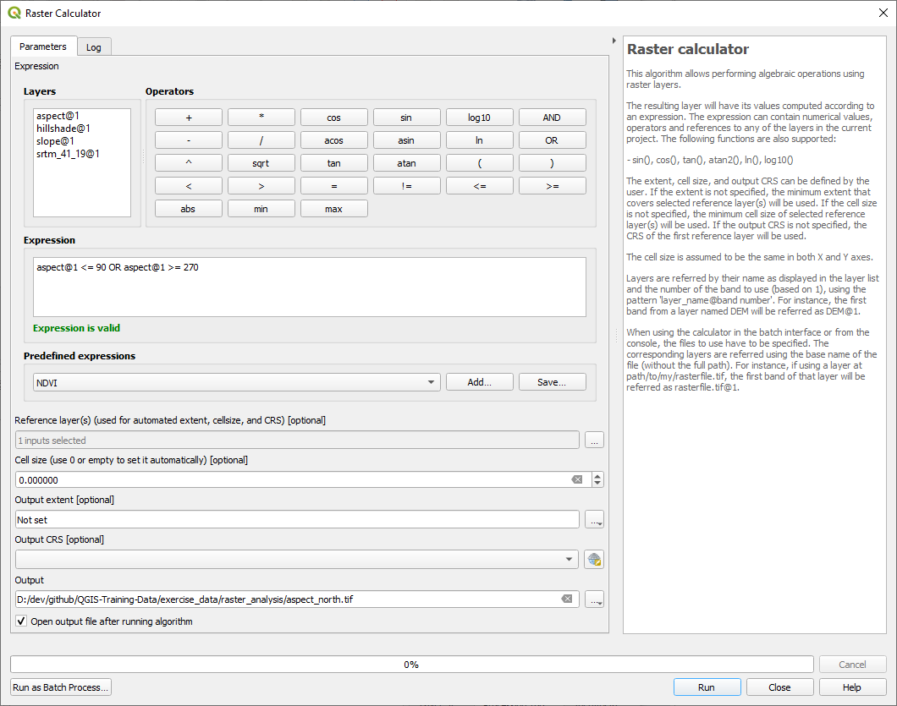
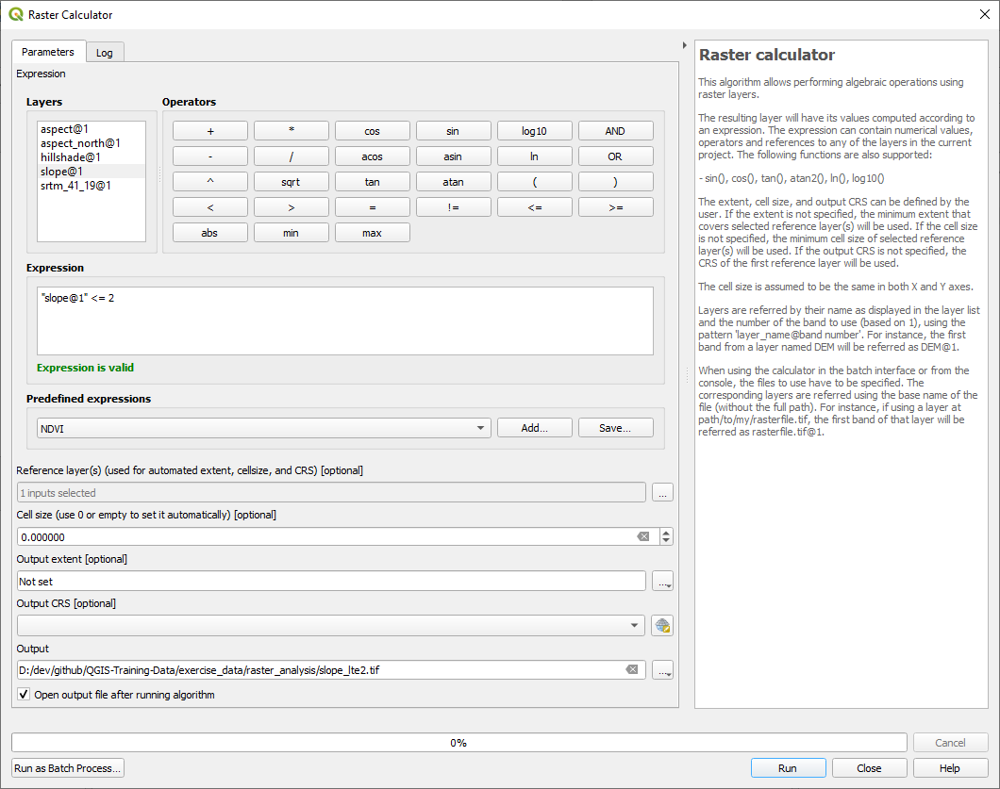
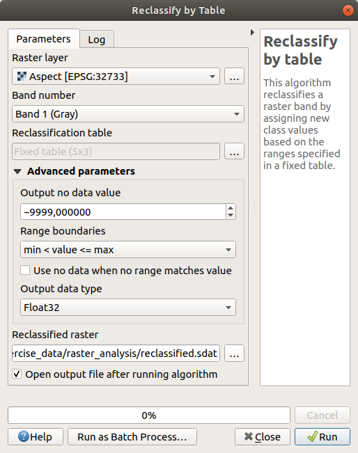
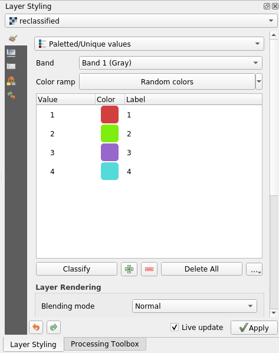

7.3. သင်ခန်းစာ - မြေမျက်နှာသွင်ပြင် ဆန်းစစ်လေ့လာခြင်း (Lesson: Terrain Analysis)
အချို့ raster အမျိုးအစားများသည် ၎င်းတို့ကိုယ်စားပြုဖော်ပြသော terrain အကြောင်း ပိုမိုထိုးထွင်းသိမြင်စေနိုင်ပါသည်။ Digital Elevation Models (DEMs) များသည် ဤနေရာတွင် အထူးအသုံးဝင်ပါသည်။ ယခင်သင်ခန်းစာတွင် ပြုလုပ်ခဲ့သော အဆိုပြု residential development (လူနေအိမ်ယာများဖွံ့ဖြိုးတိုးတက်မှု) အတွက် စိတ်ဝင်စားသည့်ဧရိယာအကြောင်း ပိုမိုသိရှိနိုင်စေရန် terrain analysis tool များကို ယခုသင်ခန်းစာတွင် အသုံးပြုသွားပါမည်။
ဤသင်ခန်းစာအတွက် ရည်မှန်းချက်- မြေမျက်နှာသွင်ပြင် အကြောင်း အချက်အလက်များပိုမိုရရှိစေရန် terrain analysis tool များကို အသုံးပြုတတ်စေရန်။
7.3.1. ★☆☆ လိုက်လုပ်ကြည့်ပါ - တောင်အရိပ်တစ်ခု တွက်ချက်ခြင်း (Follow Along: Calculating a Hillshade)
ယခင်သင်ခန်းစာတွင် အသုံးပြုခဲ့သော DEM layer ကိုပင် ပြန်လည်အသုံးပြုပါမည်။ Browser panel မှတဆင့် raster/SRTM/srtm_41_19.tif ကိုထည့်သွင်းပါ။
DEM layer သည် မြေမျက်နှာသွင်ပြင် အနိမ့်အမြင့်ကို ပြသပေးပါသည်၊ သို့သော် တစ်ခါတရံတွင် အနည်းငယ် ယေဘုယျဆန်နိုင်ပါသည်။ ၎င်း DEM တွင် သင်လိုအပ်သော terrain နှင့်ပတ်သက်သည့် 3D အချက်အလက်များအားလုံးပါဝင်သော်လည်း 3D အရာဝတ္ထုပုံစံတစ်ခု မဟုတ်ပါ။ ပိုမိုကောင်းမွန်သော terrain အသွင်အပြင်ကို ရရှိရန် hillshade တစ်ခုကို တွက်ချက်ပေးနိုင်ပါသည်၊ hillshade သည် 3D အသွင် image တစ်ခုဖန်တီးရန် အလင်းရောင်နှင့် အရိပ် ကိုအသုံးပြုပြီး terrain ကိုပုံဖော်ပြပေးသော raster တစ်ခုဖြစ်ပါသည်။
menu ထဲရှိ algorithm များကို အသုံးပြုပါမည်။
menu ကိုနှိပ်ပါ
Algorithm တွင် အလင်းရောင်ရင်းမြစ်၏ တည်နေရာကို သတ်မှတ်ပေးနိုင်ပါသည် - Azimuth ဟုခေါ်ပြီး တန်ဖိုးများအနေဖြင့် 0 (မြောက်ဘက်) ၊ 90 (အရှေ့ဘက်) ၊ 180 (တောင်ဘက်) နှင့် 270 (အနောက်ဘက်) ရှိပါသည်။ အလင်းရောင်ရင်းမြစ်၏ အမြင့်ကို Vertical angle တွင်သတ်မှတ်ပေးနိုင်ပြီး 0 မှ 90 ဒီဂရီ ဖြစ်ပါသည်။
အောက်ပါတန်ဖိုးများကို အသုံးပြုပါမည်-
Z factor တွင်
1.0Azimuth (horizontal angle) တွင်
300.0°Vertical angle တွင်
40.0°

ဖိုင်ကို
hillshadeဟူသော အမည်ဖြင့်exercise_data/raster_analysis/folder အသစ်ထဲတွင် သိမ်းဆည်းပါနောက်ဆုံးတွင် Run ကိုနှိပ်ပါ
hillshade ဟုခေါ်သော layer အသစ်တစ်ခုရရှိလာမည်ဖြစ်ပြီး အောက်ပါပုံစံအတိုင်း ဖြစ်နေပါလိမ့်မည်-

အမြင်အရ ကြည့်ကောင်းပြီး 3D ပုံစံဖြစ်နေပါမည်၊ သို့သော် ၎င်းကို ပိုမိုကောင်းမွန်အောင် လုပ်နိုင်ပါသေးသည်။ သူ့အတိုင်းဆိုလျှင် hillshade သည် ပလတ်စတစ်ပုံသွန်းထားသည့်ပုံစံ ဖြစ်နေပါသည်။ Hillshade ကို overlay (အပေါ်ဖုံးအုပ်) အနေဖြင့်အသုံးပြုပြီး ပိုမိုအရောင်စုံလင်သော အခြား raster များဖြင့် ပေါင်းစပ်ပြီး အသုံးပြုနိုင်ပါသည်။
7.3.2. ★☆☆ လိုက်လုပ်ကြည့်ပါ - Hillshade အား Overlay တစ်ခုအဖြစ် အသုံးပြုခြင်း (Follow Along: Using a Hillshade as an Overlay)
Hillshade တစ်ခုသည် နေ့တစ်နေ့၏အချိန်တစ်ခုတွင်ရှိသော နေရောင်အကြောင်း အလွန်အသုံးဝင်သည့် အချက်အလက်များ ပေးနိုင်ပါသည်။ သို့သော် ၎င်းကို မြေပုံပိုမိုကြည့်ကောင်းစေရန် ရည်ရွယ်ချက်များအတွက်လည်း အသုံးပြုနိုင်ပါသည်။ အဓိကအချက်မှာ hillshade ကို အလင်းဖောက်နေစေရန် သတ်မှတ်ပေးခြင်းဖြစ်သည်။
မူရင်း srtm_41_19 layer ၏ သင်္ကေတကို Pseudocolor scheme သို့ပြောင်းပါ
srtm_41_19 နှင့် hillshade layer များမှလွဲ၍ ကျန် layer များအားလုံးကို ဖျောက်ထားပါ
Layers panel ထဲတွင် hillshade layer ၏အောက်သို့ srtm_41_19 layer အား ဆွဲရွှေ့ပါ
hillshade layer properties ထဲရှိ Transparency tab ထဲတွင် hillshade layer အား transparent ဖြစ်စေရန် သတ်မှတ်ပေးပါ
Global opacity ကို
50%သတ်မှတ်ပါအောက်ပါပုံစံအတိုင်း ရရှိပါလိမ့်မည်-
Layers panel ထဲတွင် hillshade layer အား အဖွင့်အပိတ်လုပ်ကြည့်ပြီး ခြားနားမှုကို ကြည့်ပါ။
Hillshade တစ်ခုအား ဤကဲ့သို့ အသုံးပြုခြင်းဖြင့် မြေမျက်နှာသွင်ပြင်အနေအထားကို ပိုမိုကောင်းမွန်စေနိုင်ပါသည်။ ရရှိလာသော ရလာဒ် effect ကို သဘောမကျသေးလျှင် hillshade layer ၏ transparency ကိုပြောင်းလဲပေးနိုင်ပါသည်၊ hillshade သည် အရောင်တောက်လေလေ ၎င်းအောက်ရှိ layer သည် အရောင်မှိန်လာလေလေဖြစ်သည်။ အဆင်ပြေသည့်ပုံစံအတိုင်း ချိန်ညှိပေးရန်လိုအပ်ပါသည်။
လုပ်ဆောင်ပြီးသောအခါ project အားသိမ်းဆည်းရန် မမေ့ပါနှင့်။
7.3.3. လိုက်လုပ်ကြည့်ပါ - အကောင်းဆုံးဧရိယာများကို ရှာဖွေခြင်း (Follow Along: Finding the best areas)
Think back to the estate agent problem, which we last addressed in the Vector Analysis lesson. Let us imagine that the buyers now wish to purchase a building and build a smaller cottage on the property. In the Southern Hemisphere, we know that an ideal plot for development needs to have areas on it that: Vector Analysis သင်ခန်းစာတွင် လုပ်ဆောင်ခဲ့သော အိမ်ခြံမြေပွဲစားကိစ္စကို ပြန်တွေးကြည့်ပါ။ ဝယ်ယူမည့်သူများသည် အဆောက်အဦတစ်ခုဝယ်ယူပြီး ခြံမြေနေရာတွင် တစ်ထပ်တိုက်ငယ်တစ်ခုဆောက်လုပ်လိုသည် ဆိုကြပါစို့။ Southern Hemisphere (ကမ္ဘာ့တောင်ဘက်ခြမ်း) တွင် development အတွက် အကောင်းဆုံးမြေနေရာသည် အောက်ပါဧရိယာများပေါ်တွင် ရှိရန်လိုအပ်ပါသည်-
မြောက်ဘက်သို့ မျက်နှာမူခြင်း
Slope (လျှောစောက်) 5 ဒီဂရီအောက်ရှိခြင်း
သို့သော် Slope သည် 2 ဒီဂရီအောက်ဖြစ်ပါက aspect (မျက်နှာမူရာအရပ်) သည်အရေးမကြီးပါ။
၎င်းတို့အတွက် အကောင်းဆုံးဧရိယာကို ရှာဖွေကြည့်ပါမည်။
7.3.4. ★★☆ လိုက်လုပ်ကြည့်ပါ - လျှောစောက်တွက်ချက်ခြင်း (Follow Along: Calculating the Slope)
Slope သည် မြေမျက်နှာသွင်ပြင် မည်မျှ မတ်စောက် သည်ကို ဖော်ပြပေးပါသည်။ ဥပမာ- သင့်အနေဖြင့် မြေနေရာတစ်ခုပေါ်တွင် အိမ်များဆောက်လိုသည်ဆိုပါက ထိုမြေနေရာသည် အတော်အတန် ပြန့်နေရန် လိုအပ်ပါသည်။
Slope ကိုတွက်ချက်ရန် ထဲရှိ algorithm ကိုအသုံးပြုရန် လိုအပ်ပါသည်။
Algorithm ကိုဖွင့်ပါ
Elevation layer အနေဖြင့် srtm_41_19 ကိုရွေးပါ
Z factor ကို
1.0ထားပါOutput ကို
hillshadeသိမ်းဆည်းထားသည့် folder ထဲတွင်slopeဟူသောအမည်ဖြင့် ဖိုင်တစ်ခုအဖြစ်သိမ်းဆည်းပါRun ကိုနှိပ်ပါ
ယခုဆိုလျှင် terrain ၏ slope ကို မြင်တွေ့ရပါလိမ့်မည်၊ pixel တစ်ခုချင်းစီတွင် သက်ဆိုင်ရာ slope တန်ဖိုးကို ပါဝင်ပါသည်။ အနက်ရောင် pixel များသည် ပြန့်သော terrain ကိုပြသပြီး အဖြူရောင် pixel များသည် မတ်စောက်သော terrain ကိုပြသပေးပါသည်-

7.3.5. ★★☆ မိမိကိုယ်တိုင်ကြိုးစားကြည့်ပါ - မျက်နှာမူရာအရပ် တွက်ချက်ခြင်း (Try Yourself: Calculating the aspect)
Aspect သည် terrain ၏ slope များမျက်နှာမူရာ သံလိုက်အိမ်မြောင် လားရာ ဖြစ်သည်။ Aspect တန်ဖိုး 0 သည် မြောက်အရပ်သို့၊ 90 သည် အရှေ့အရပ်သို့ ၊ 180 သည် တောင်အရပ်သို့ နှင့် 270 သည် အနောက်အရပ်သို့ မျက်နှာမူပါသည်။
ယခု study area သည် Southern Hemisphere (ကမ္ဘာ့တောင်ဘက်ခြမ်း) တွင်ဖြစ်သောကြောင့် နေရောင်ရရှိစေရန်အတွက် အဆောက်အဦများကို မြောက်အရပ်မျက်နှာမူသော slope ပေါ်တွင် တည်ဆောက်သင့်ပါသည်။
ထဲရှိ Aspect algorithm ကိုအသုံးပြုပြီး aspect layer ကို slope layer နှင့်အတူ သိမ်းဆည်းပါ။
အဖြေ
Aspect dialog ထဲတွင် အောက်ပါအတိုင်း သတ်မှတ်ပါ-

ရလာဒ်သည်-

7.3.6. ★★☆ လိုက်လုပ်ကြည့်ပါ - မြောက်ဘက် မျက်နှာမူရာအရပ်ကို ရှာဖွေခြင်း (Follow Along: Finding the north-facing aspect)
ယခုဆိုလျှင် slope နှင့် aspect ကိုဖော်ပြသော raster များရရှိပြီးဖြစ်သည်၊ သို့သော် မည်သည့်နေရာသည် အကောင်းဆုံးအခြေအနေဖြစ်သည်ကို မသိရှိရသေးပါ။ အဆိုပါ analysis ကို Raster calculator ဖြင့် လုပ်ဆောင်နိုင်ပါသည်။
QGIS တွင် အမျိုးမျိုးသော raster calculator များရှိပါသည်-
Processing ထဲတွင်
Tool တစ်ခုချင်းစီသည် ရလာဒ်အတူတူပင် ထုတ်ပေးပါသည်၊ သို့သော် အသုံးပြုသည့် syntax (စာရေးသားပုံ) သည် အနည်းငယ် ကွာခြားမှုရှိနိုင်ပြီး ရရှိနိုင်သော operator များ ကွဲပြားနိုင်ပါသည်။
Processing Toolbox ထဲရှိ ကို အသုံးပြုပါမည်။
Tool ကို click နှစ်ချက်နှိပ်ပြီး ဖွင့်ပါ။
Dialog ၏ ဘယ်ဘက်အပေါ်တွင် ထည့်သွင်းထားသော raster layer များအားလုံးကို
name@Nအနေဖြင့် ဖော်ပြထားပါသည်၊nameသည် layer ၏အမည်ဖြစ်ပြီးNသည် band ဖြစ်ပါသည်။Dialog ၏ ညာဘက်အပေါ်တွင် အမျိုးမျိုးသော operator များကို မြင်တွေ့ရပါမည်။ Raster တစ်ခုသည် image တစ်ခုဖြစ်ပြီး ၎င်းကို ဂဏန်းများဖြင့် ဖြည့်ထားသော 2D matrix တစ်ခုအနေဖြင့် တွေးမြင်သင့်ပါသည်။
မြောက်အရပ်သည် 0 (zero) ဒီဂရီဖြစ်ပါသည်၊ ထို့ကြောင့် terrain သည် မြောက်အရပ်သို့မျက်နှာမူရန် ၎င်း၏ aspect သည် 270 ဒီဂရီထက် ပိုကြီး သို့မဟုတ် 90 ဒီဂရီအောက် ငယ်ရန် လိုအပ်ပါသည်။ ထို့ကြောင့် formula သည်-:
aspect@1 <= 90 OR aspect@1 >= 270
Raster ၏ cell အရွယ်အစား၊ extent နှင့် CRS များကဲ့သို့ အသေးစိတ်များကို သတ်မှတ်ပေးရပါမည်။ မိမိကိုယ်တိုင် ထည့်သွင်းပေးနိုင်သလို
Reference layerတစ်ခုရွေးချယ်ပြီး အလိုအလျှောက်သတ်မှတ်ပေးနိုင်ပါသည်။ ဒုတိယ option ကိုရွေးချယ်ရန် Reference layer(s) parameter ဘေးရှိ … ခလုတ်ကိုနှိပ်ပါ။Dialog ထဲတွင် aspect layer ကိုရွေးချယ်ပါ၊ အဘယ်ကြောင့်ဆိုသော် resolution တူညီသော layer တစ်ခုရရှိလိုသောကြောင့်ဖြစ်သည်။
Layer ကို
aspect_northအနေဖြင့် သိမ်းဆည်းပါ။Dialog သည် အောက်ပါပုံစံအတိုင်း ဖြစ်သင့်ပါသည်-
 နောက်ဆုံးတွင် Run ကိုနှိပ်ပါ။
ရလာဒ်သည် အောက်ပါပုံအတိုင်း ဖြစ်ပါလိမ့်မည်-

Output တန်ဖိုးများသည် 0 သို့မဟုတ် 1 ဖြစ်ကြပါသည်။ ဆိုလိုသည်မှာ raster ထဲရှိ pixel တစ်ခုချင်းစီအတွက် ကျွန်ုပ်တို့ ရေးသားခဲ့သော formula သည် အခြေအနေနှင့်ကိုက်ညီမှုရှိသည် သို့မဟုတ် ကိုက်ညီမှုမရှိသည်ကို ပြန်ထုတ်ပေးပါသည်။ ထို့ကြောင့် နောက်ဆုံးရလာဒ်သည် False (ကိုက်ညီမှုမရှိ) (0) နှင့် **True (ကိုက်ညီမှုရှိ) ** (1) ဖြစ်ပါလိမ့်မည်။
7.3.7. ★★☆ မိမိကိုယ်တိုင်ကြိုးစားကြည့်ပါ - နောက်ထပ်သတ်မှတ်ချက်များ (Try Yourself: More criteria)
ယခုဆိုလျှင် aspect တွက်ချက်ပြီးဖြစ်ပါသည်၊ DEM မှ layer အသစ် ၂ ခုဖန်တီးပါ။
ပထမ layer သည် slope
2ဒီဂရီနှင့်အောက်ရှိသော ဧရိယာများကို ဖော်ထုတ်မည်ဖြစ်သည်။ဒုတိယ layer သည် slope
5ဒီဂရီနှင့်အောက်ရှိသော ဧရိယာများကို ဖော်ထုတ်မည်ဖြစ်သည်။၎င်းတို့ကို
exercise_data/raster_analysisအောက်တွင်slope_lte2.tifနှင့်slope_lte5.tifဖိုင်များအနေဖြင့် သိမ်းဆည်းပါ။
အဖြေ
Raster calculator dialog တွင် အောက်ပါအတိုင်းသတ်မှတ်ပါ-
slope@1 <= 2expression ကိုထည့်ပါReference layer(s) အနေဖြင့်
slopelayer ကိုရွေးပါ 5 ဒီဂရီအတွက် expression ထဲရှိ
2နေရာတွင်5ဖြင့်အစားထိုးပြီး ဖိုင်အမည်ကိုလည်း5ပြောင်းပါ။
ရလာဒ်များသည်-
2 ဒီဂရီအတွက်-

5 ဒီဂရီအတွက်-

7.3.8. ★★☆ လိုက်လုပ်ကြည့်ပါ - Raster Analysis ရလာဒ်များအား ပေါင်းစပ်ခြင်း (Follow Along: Combining Raster Analysis Results)
ယခုဆိုလျှင် DEM မှ raster layer ၃ ခု ထုတ်ယူပြီးဖြစ်ပါသည်-
aspect_north: မြောက်အရပ်မျက်နှာမူသော terrain
slope_lte2: 2 ဒီဂရီနှင့်အောက်ရှိသော slope
slope_lte5: 5 ဒီဂရီနှင့်အောက်ရှိသော slope
အခြေအနေနှင့်ကိုက်ညီလျှင် pixel တန်ဖိုးသည် 1 ဖြစ်ပြီး မကိုက်ညီလျှင် 0 ဖြစ်ပါသည်။ ထို့ကြောင့် အဆိုပါ raster ၃ ခုကို မြောက်လိုက်ပါက ၎င်းတို့အားလုံးတွင် တန်ဖိုး 1 ရှိသော pixel များသည် 1 အနေဖြင့် ရရှိပါလိမ့်မည် (ကျန် pixel များသည် 0 ဖြစ်ပါလိမ့်မည်)။
ကိုက်ညီမှုရှိရမည့် အခြေအနေများမှာ-
slope 5 ဒီဂရီနှင့်အောက်ရှိပြီး terrain သည် မြောက်အရပ်မျက်နှာမူရမည်
slope 2 ဒီဂရီနှင့်အောက်ရှိပြီး terrain မျက်နှာမူရာအရပ်သည် အရေးမကြီးပါ
ထို့ကြောင့် slope 5 ဒီဂရီနှင့်အောက်ရှိပြီး AND terrain သည်မြောက်အရပ်မျက်နှာမူသည့် ဧရိယာ (သို့မဟုတ်) OR slope 2 ဒီဂရီနှင့်အောက်ရှိသည့် ဧရိယာများကို ရှာဖွေရန်လိုအပ်ပါသည်။ အဆိုပါ terrain များသည် development အတွက် သင့်တော်ပါမည်။
အဆိုပါ criteria များနှင့်ကိုက်ညီသော ဧရိယာများကို တွက်ချက်ရန်-
Raster calculator ကိုထပ်ဖွင့်ပါ
Expression ထဲတွင် အောက်ပါ expression ကိုအသုံးပြုပါ-:
( aspect_north@1 = 1 AND slope_lte5@1 = 1 ) OR slope_lte2@1 = 1
Reference layer(s) parameter တွင်
aspect_northကိုသတ်မှတ်ပါ (အခြား layer ကိုရွေးချယ်လျှင်လည်း ကိစ္စမရှိပါ - ၎င်းတို့အားလုံးကိုsrtm_41_19မှ တွက်ချက်ထားသောကြောင့်ဖြစ်သည်)Output ကို
exercise_data/raster_analysis/ထဲတွင်all_conditions.tifအနေဖြင့် သိမ်းဆည်းပါ။Run ကိုနှိပ်ပါ
ရလာဒ်သည်-

Hint
အထက်ဖော်ပြပါ အဆင့်များကို အောက်ပါ command အသုံးပြုပြီး တစ်ကြောင်းတည်းအနေဖြင့် ရေးသားနိုင်ပါသည်-:
((aspect@1 <= 90 OR aspect@1 >= 270) AND slope@1 <= 5) OR slope@1 <= 2
7.3.9. ★★☆ လိုက်လုပ်ကြည့်ပါ - Raster ကို ပေါ့ပါးရိုးရှင်းအောင်လုပ်ခြင်း (Follow Along: Simplifying the Raster)
အထက်တွင်ပြထားသော ဓာတ်ပုံတွင် မြင်တွေ့ရသည့်အတိုင်း ပေါင်းစပ်ထားသော analysis မှ ရလာဒ်တွင် အခြေအနေနှင့်ကိုက်ညီသော အလွန်သေးငယ်သည့်ဧရိယာများစွာ (အဖြူရောင်ဖြင့်) ပါရှိနေပါသည်။ သို့သော် အဆိုပါ ဧရိယာငယ်များသည် analysis အတွက် အမှန်တကယ်အသုံးမဝင်ပါ၊ အဘယ်ကြောင့်ဆိုသော အဆောက်အဦဆောက်ရန်အတွက် ဧရိယာသေးငယ်လွန်းသောကြောင့်ဖြစ်သည်။ အဆိုပါ အသုံးမဝင်သောဧရိယာငယ်များအားလုံးကို ဖယ်ရှားကြည့်ပါမည်။
Sieve tool ကိုဖွင့်ပါ (Processing Toolbox ထဲရှိ မှ)
Input file တွင်
all_conditionsဖိုင်ကိုထည့်ပြီး Sieved တွင်all_conditions_sieve.tifဟုသတ်မှတ်ပါ (exercise_data/raster_analysis/အောက်တွင် သိမ်းဆည်းပါ)Threshold တွင် 8 (အနည်းဆုံး pixel ၈ ခု တစ်ဆက်တစ်ဆက်တည်းရှိသော) ဟုသတ်မှတ်ပြီး Use 8-connectedness ကိုအမှန်ခြစ်ပါ။

Processing ပြီးသည်နှင့်တပြိုင်နက် layer အသစ်ကို ထည့်သွင်းပေးပါလိမ့်မည်။

မည်သို့ဖြစ်ပျက်သွားသည်ကို raster ဖိုင်အသစ်၏ metadata ထဲတွင် ကြည့်နိုင်ပါသည်။
Layer Properties dialog ၏ Information tab အောက်တွင် metadata ကိုကြည့်ပါ။
STATISTICS_MINIMUMတန်ဖိုးကို ကြည့်ပါ-
ဤ raster တွင် ၎င်းကိုထုတ်ယူထားသော raster ကဲ့သို့ပင်
1နှင့်0တန်ဖိုးများသာ ရှိနေသင့်ပါသည်၊ သို့သော် ၎င်းတွင် အလွန်ကြီးမားသော အနုတ် ဂဏန်းတစ်ခုလည်း ပါရှိနေပါသည်။ အဆိုပါ ဂဏန်းသည် null တန်ဖိုးတစ်ခုဖြစ်ပါသည်။ အဆိုပါ null တန်ဖိုးများကို zero အဖြစ်သို့ ပြောင်းလဲသတ်မှတ်ပါမည်။Raster Calculator ကိုဖွင့်ပြီး အောက်ပါ expression ကိုရေးပါ-:
(all_conditions_sieve@1 <= 0) = 0
ထိုသို့လုပ်ခြင်းသည် အနုတ် မဟုတ်သော တန်ဖိုးများအားလုံးကို ချန်ထားပြီး အနုတ်ဂဏန်းများကို zero အဖြစ်သို့ သတ်မှတ်ပေးပါလိမ့်မည်။ တန်ဖိုး
1ရှိသော ဧရိယာများအားလုံးကို ပကတိအတိုင်း ထားရှိပေးမည်ဖြစ်သည်။Output ကို
exercise_data/raster_analysis/အောက်တွင်all_conditions_simple.tifဖိုင်အနေဖြင့် သိမ်းဆည်းပါ။
Output သည် အောက်ပါပုံအတိုင်းဖြစ်ပါသည်-

ရလာဒ်သည် ရိုးရှင်းအောင်လုပ်ထားသော ဗားရှင်းတစ်ခုဖြစ်ပါသည်။ မှတ်သားထားရမည်မှာ Tool တစ်ခုကိုအသုံးပြုပြီး ရရှိလာသော ရလာဒ်များသည် မျှော်လင့်ထားသလိုဖြစ်မလာပါက metadata (ရရှိနိုင်ပါက vector attribute များ) ကိုကြည့်ပြီး ပြဿနာကို ဖြေရှင်းနိုင်ပါသည်။
7.3.10. ★★☆ လိုက်လုပ်ကြည့်ပါ - Raster ကို အတန်းအစားပြန်ခွဲခြင်း (Follow Along: Reclassifying the Raster)
Raster layer များတွင် တွက်ချက်မှုများပြုလုပ်ရန် Raster calculator ကိုအသုံးပြုခဲ့ပြီးဖြစ်ပါသည်။ ရှိနေပြီးသား layer များမှ အချက်အလက်များကို ထုတ်ယူရာတွင် အသုံးပြုနိုင်သော အခြား စွမ်းဆောင်ရည်မြင့်မားသည့် tool လည်းရှိပါသည်။
aspect layer တွင် 0 မှ 360 အထိ အပိုင်းအခြားအတွင်း ဂဏန်းတန်ဖိုးများပါရှိသည်ကို သိရှိပြီးဖြစ်ပါသည်။ လုပ်ဆောင်လိုသည်မှာ အဆိုပါ layer ကို aspect ပေါ်မူတည်ပြီး အခြား discrete (ပြတ်ကိန်း) တန်ဖိုးများ (1 မှ 4 သို့) အဖြစ်သို့ reclassify ပြုလုပ်လိုခြင်းဖြစ်သည်-
1 = North (0 မှ 45 နှင့် 315 မှ 360)
2 = East (45 မှ 135)
3 = South (135 မှ 225)
4 = West (225 မှ 315)
ဤလုပ်ဆောင်မှုကို raster calculator အသုံးပြုပြီး ဆောင်ရွက်နိုင်ပါသည်၊ သို့သော် formula သည် အလွန်ရှည်လျားပါလိမ့်မည်။
အခြားအသုံးပြုနိုင်သော tool မှာ Processing Toolbox ထဲရှိ တွင်ရှိသော Reclassify by table tool ဖြစ်ပါသည်။
Tool ကိုဖွင့်ပါ
Input raster layerအဖြစ် aspect ကိုရွေးပါReclassification table ၏ … ကိုနှိပ်ပါ။ ဇယားပုံစံ dialog ပေါ်လာမည်ဖြစ်ပြီး class တစ်ခုချင်းစီအတွက် အနည်းဆုံး၊ အများဆုံး နှင့် တန်ဖိုးအသစ်များကို ရွေးချယ်ပေးနိုင်ပါသည်။
Add row ခလုတ်ကိုနှိပ်ပြီး row ၅ ခု ထည့်သွင်းပါ။ Row တစ်ခုချင်းစီတွင် အောက်ပါပုံအတိုင်း ဖြည့်သွင်းပြီး OK ကိုနှိပ်ပါ-

Class တစ်ခုချင်းစီ၏ threshold တန်ဖိုးများကို ပြုမူသည့် algorithm မှအသုံးပြုသောနည်းလမ်းသည် Range boundaries (အပိုင်းအခြားနယ်နိမိတ်) ဖြင့်သတ်မှတ်ခြင်းဖြစ်ပါသည်။
Layer ကို
exercise_data/raster_analysis/folder ထဲတွင်reclassified.tifအနေဖြင့် သိမ်းဆည်းပါ။ Run ကိုနှိပ်ပါ။
မူလ aspect layer နှင့် reclassified ပြုလုပ်ထားသော layer ကို နှိုင်းယှဉ်ကြည့်ပါက ကြီးကြီးမားမား ကွာခြားမှုမရှိပါ။ သို့သော် legend (ရည်ညွှန်းချက်) ကိုကြည့်ပါက တန်ဖိုးများသည် 1 မှ 4 အထိဖြစ်သွားသည် မြင်တွေ့နိုင်ပါသည်။
အဆိုပါ layer ကို ပိုကောင်းသော style တစ်ခုပြင်ဆင်ကြည့်ပါမည်။
Layer Styling panel ကိုဖွင့်ပါ
Singleband gray အစား Paletted/Unique values ကိုရွေးပါ
တန်ဖိုးများကို အလိုအလျှောက် ခေါ်ဆောင်ပြီး ကျပန်းအရောင်များသတ်မှတ်ပေးရန် Classify ခလုတ်ကိုနှိပ်ပါ-

Output သည် အောက်ပါပုံစံအတိုင်း ဖြစ်သင့်ပါသည် (အရောင်များသည် ကျပန်းထုတ်ယူပေးသောကြောင့် သင်ရရှိသော အရောင်နှင့် ကွဲပြားနိုင်ပါသည်)-

Layer တွင် အသုံးပြုခဲ့သော အဆိုပါ reclassification နည်းလမ်းနှင့် အရောင် style များကြောင့် aspect ဧရိယာများကို ချက်ချင်းခွဲခြားသိနိုင်ပါသည်။
7.3.11. ★☆☆ လိုက်လုပ်ကြည့်ပါ - Raster တွင် အချက်အလက်များရှာခြင်း (Follow Along: Querying the raster)
Vector layer များနှင့်မတူသည်မှာ raster layer များတွင် attribute ဇယားမပါရှိပါ။ Pixel တစ်ခုချင်းစီတွင် တစ်ခု သို့မဟုတ် တစ်ခုထက်ပိုသော ဂဏန်းတန်ဖိုးများ (band တစ်ခုတည်းရှိသော သို့မဟုတ် band များစွာရှိသော raster များ) ပါဝင်ပါသည်။
ဤလေ့ကျင့်ခန်းတွင် အသုံးပြုခဲ့သော raster layer များအားလုံးတွင် band တစ်ခုတည်းသာ ပါဝင်ကြပါသည်။ Layer ပေါ်မူတည်ပြီး pixel တန်ဖိုးများသည် elevation (မြေမျက်နှာပြင် အနိမ့်အမြင့်) ၊ aspect (မျက်နှာမူရာအရပ်) သို့မဟုတ် slope (လျှောစောက်) တန်ဖိုးများကို ကိုယ်စားပြုနိုင်ပါသည်။
Pixel တစ်ခု၏တန်ဖိုးကိုရရှိရန် raster layer ကို query ပြုလုပ်လိုလျှင်  Identify Features ခလုတ်ကို အသုံးပြုနိုင်ပါသည်။
Identify Features ခလုတ်ကို အသုံးပြုနိုင်ပါသည်။
Attributes toolbar မှ tool ကို ရွေးပါ
srtm_41_19 layer ၏ ကျပန်းနေရာတစ်ခုပေါ်တွင် click နှိပ်ပါ။ Identify Results တွင် click နှိပ်ထားသော တည်နေရာရှိ band တန်ဖိုးကို ပြသပေးမည်ဖြစ်သည်-

Identify Results panel ၏ output ကို
treemode မှtablemode သို့ပြောင်းလဲနိုင်ပါသည်၊ ထိုသို့ပြုလုပ်ရန် panel ၏အောက်ခြေရှိ View menu ထဲရှိ Table ကိုရွေးချယ်ပါ-
Raster ၏တန်ဖိုးများကို ရယူရန် pixel တစ်ခုချင်းစီအား click နှိပ်နေခြင်းသည် ကြာလာလျှင် ငြီးငွေ့စရာဖြစ်ပါလိမ့်မည်။ ထိုအတွက် Value Tool plugin ကိုအသုံးပြုနိုင်ပါသည်။
ကိုနှိပ်ပါ
All tab ထဲရှိ search box တွင်
value tဟု ရိုက်ထည့်ပါValue Tool plugin ရွေးပြီး Install Plugin ကိုနှိပ်ပါ၊ ထို့နောက် dialog ကိုပိတ်ပါ။

Value Tool panel အသစ် ပေါ်လာပါလိမ့်မည်။
Tip
Panel ကိုပိတ်လိုက်ပြီးပါက မှတဆင့် ၎င်းကို ပြန်ဖွင့်နိုင်ပါသည် သို့မဟုတ် toolbar ထဲရှိ tool icon ကိုနှိပ်ပြီး ပြန်ဖွင့်နိုင်ပါသည်။
Plugin ကိုအသုံးပြုရန် Enable checkbox ကိုအမှန်ခြစ်ခြစ်ပြီး Layers panel ထဲတွင်လည်း
srtm_41_19layer ကို အမှန်ခြစ်ခြစ်ထားရန် လိုအပ်ပါသည်။မြေပုံပေါ်တွင် mouse cursor ကိုရွှေ့ပြီး pixel များ၏ တန်ဖိုးများကို ကြည့်ရှုပါ။
နောက်ထပ်လုပ်ဆောင်နိုင်သည်များ ရှိပါသေးသည်။ Value Tool plugin သည် Layers panel ထဲတွင် ဖွင့်ထားသော raster layer အားလုံး ကို query လုပ်ပေးနိုင်ပါသည်။ aspect နှင့် slope layer များကို ဖွင့်ထားပြီး မြေပုံပေါ်တွင် mouse cursor ကိုတင်ကြည့်ပါ-

7.3.12. နိဂုံးချုပ် (In Conclusion)
DEM တစ်ခုမှ analysis ရလာဒ်များကိုအားလုံးကို မည်သို့ထုတ်ယူရမည်ကို မြင်တွေ့ခဲ့ပြီးဖြစ်ပါသည်။ ၎င်းတို့တွင် hillshade ၊ slope နှင့် aspect တွက်ချက်မှုများပါဝင်ပါသည်။ နောက်ထပ်ဆန်းစစ်လေ့လာမှုများထပ်မံလုပ်ဆောင်ပြီး အဆိုပါ ရလာဒ်များကို ပေါင်းစပ်ရာတွင်လည်း raster calculator ကို မည်သို့အသုံးပြုရမည်ကို မြင်တွေ့ခဲ့ပြီးဖြစ်သည်။ နောက်ဆုံးအနေဖြင့် layer တစ်ခုကို မည်သို့ reclassify လုပ်ဆောင်ပြီး ရလာဒ်များကို မည်သို့ query လုပ်ဆောင်ရမည်ကို လေ့လာခဲ့ပြီးဖြစ်ပါသည်။
7.3.13. နောက်ထပ် ဘာအကြောင်းအရာလဲ? (What’s Next?)
ယခုဆိုလျှင် analysis နှစ်ခုလုပ်ဆောင်ပြီးဖြစ်ပါသည်- အလားအလာရှိသော သင့်တော်သည့် မြေကွက်နေရာများကို ပြသပေးသော vector analysis နှင့် အလားအလာရှိသော သင့်တော်သည့် မြေမျက်နှာသွင်ပြင်ကို ပြသပေးသော raster analysis တို့ဖြစ်ကြပါသည်။ နောက်လာမည့် မော်ဂျူးထဲရှိ သင်ခန်းစာတွင် အဆိုပါ analysis နှစ်ခုကို ပေါင်းစပ်ပြီး နောက်ဆုံးရလာဒ်ကို မည်သို့ဖော်ထုတ်ရမည်ကို သင်ကြားပေးမည်ဖြစ်ပါသည်။